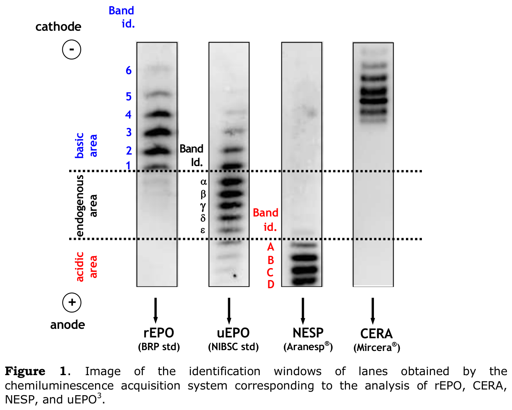
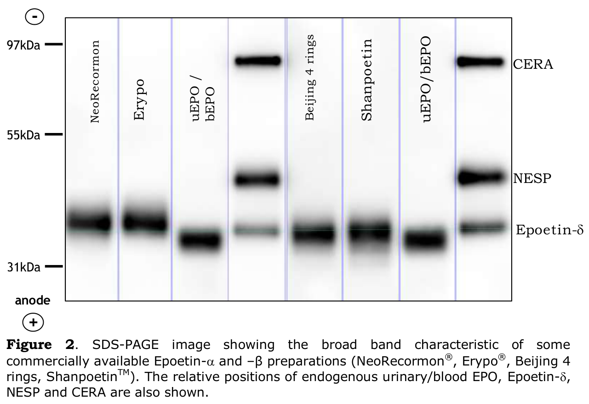
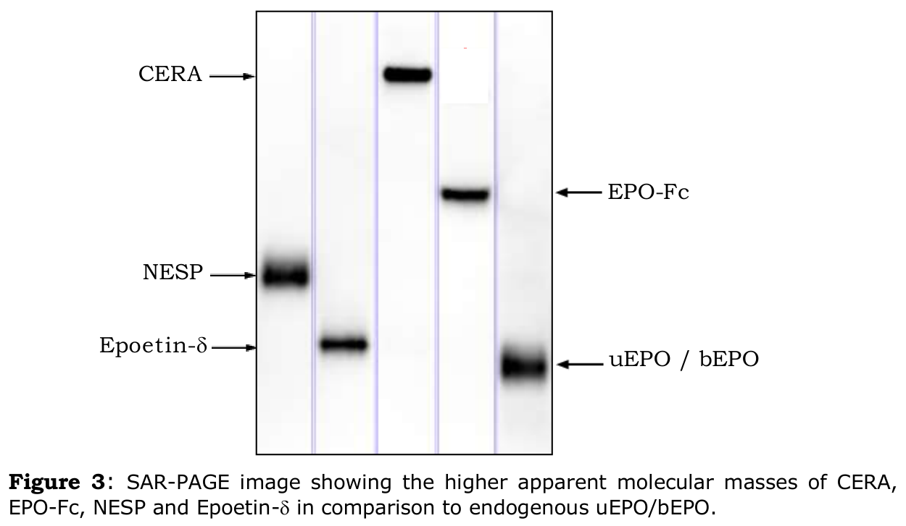
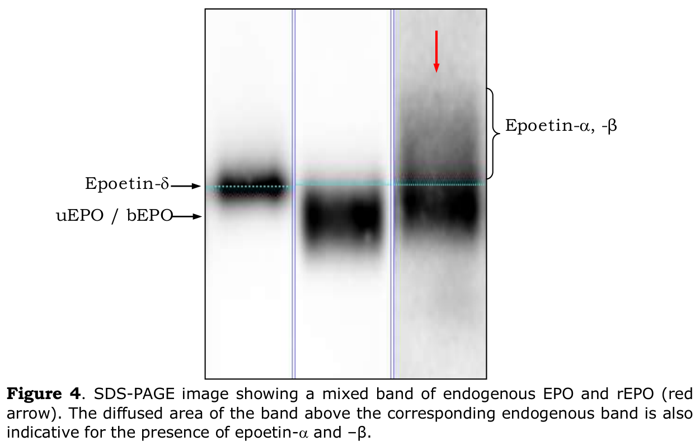
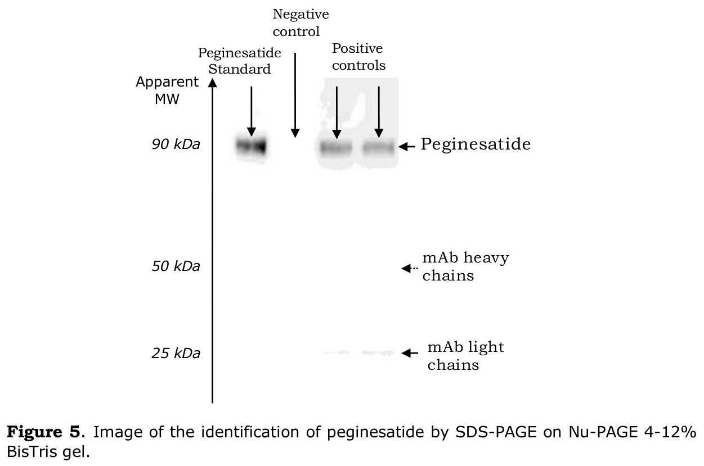

Technical Documents · TD2014EPO
Edition v1.0, 2014 (version 1.0) · effective 1 September 2014 · superseded
Retrieved on 25 November 2026 from https://www.wada-ama.org/sites/default/files/2022-01/WADA-TD2014EPO-v1-Harmonization-of-Analysis-and-Reporting-of-ESAs-by-Electrophoretic-Techniques-EN.pdf
Editions: v1.0, 2027 (current) · v1.0, 2024 · v1.0, 2022 · v2.0, 2021 · v1.0, 2014 · v1.0, 2013 · v2.0, 2009 · v2.0, 2007 · v1.0, 2005
p. 1
HARMONIZATION OF ANALYSIS AND REPORTING OF ERYTHROPOIESIS STIMULATING AGENTS (ESAs) BY ELECTROPHORETIC TECHNIQUES.
1.0 Introduction
This document has been established to harmonize the detection and reporting of recombinant erythropoietins (i.e. epoetins) and their analogues (e.g. darbepoetin, pegserpoetin, peginesatide, EPO-Fc) by Laboratories when analyzed by electrophoretic techniques. Whenever other techniques are available (e.g. ELISA, LC/MS), reference to the applicable technical documents is also made.
All Laboratories are required to apply these criteria in the routine performance of the tests to identify the referred substances.
In this document, the following abbreviations, acronyms and trademarks are used:
CERA: (Mircera ® , Roche): Continuous Erythropoietin Receptor Activator, the erythropoietin analogue known by its International Non-proprietary Name (INN) as pegserpoetin, a pegylated derivative of epoetin-β.
EPO: Erythropoietin.
EPO-Fc: Fusion protein of EPO with human immunoglobulin heavy chain Fc (fragment, crystallizable) region.
bEPO: endogenous erythropoietin (secreted naturally by the athlete's own tissues) as found in blood (either serum or plasma).
rEPO: recombinant erythropoietin. These pharmaceutical substances are known by their INN as "epoetin". The different preparations are identified by a Greek letter, e.g. epoetin-α, -β, -ω, -δ. Other preparations (e.g. generics or copies) referred collectively as "rEPO biosimilars" may have differing isoform profiles not exactly matching those already referenced.
uEPO: endogenous erythropoietin (secreted naturally by the athlete's own tissues) as excreted in urine.
ESAs: Erythropoiesis Stimulating Agents with a structure either related to EPO (e.g. NESP, CERA, EPO-Fc) or not (e.g. peginesatide).
IEF: Isoelectric focusing.
NESP (e.g. Aranesp ® , Amgen): Novel erythropoiesis stimulating protein, the erythropoietin analogue known by its INN as darbepoetin-α (dEPO).
Peginesatide: (Omontys ® , Affymax Inc.): Pegylated homodimeric peptide with no structural relationship to EPO.
SAR-PAGE: sodium N-lauroylsarcosinate ("sarcosyl") polyacrylamide gel electrophoresis.
SDS-PAGE: sodium dodecyl sulphate polyacrylamide gel electrophoresis.
p. 2
2.0 Analysis
The Laboratory shall use methods that are validated and fit for the purpose of detecting the administration of ESAs in urine or in plasma/serum.
2.1 Electrophoretic Methods
The analytical strategy to be followed for the use of electrophoretic techniques, summarized in Table 1, is as follows:
2.1.1 Initial Testing Procedure
- In case of analysis for ESAs with a structure related to EPO (e.g. rEPO, NESP, CERA, EPO-Fc), the Laboratory shall apply IEF [1] and/or SAR-PAGE [2, 3] after enrichment for EPO and/or its analogues either through nonspecific methods (e.g. ultrafiltration [1], selective protein precipitation [4]) or after immunopurification¹ [5-10].
- The Laboratory shall demonstrate through method validation that the enrichment methodology employed does not change the IEF isoform profiles or the SDS/SAR-PAGE behavior of the endogenous EPO and the ESAs being analyzed.
- In case of analysis for peginesatide, the Laboratory shall apply SDS-PAGE or SAR-PAGE [11].
2.1.2 Confirmation Procedure
The Confirmation Procedure shall depend on the rEPO or analogue presumptively found and the methodology employed for the Initial Testing Procedure.
- Immunopurification¹ of all Sample Aliquots shall be performed prior to Sample confirmation analyses by electrophoretic methods [5-10].
2.1.2.1 rEPOs
- Irrespective of the Initial Testing Procedure used (IEF and/or SAR-PAGE), the Confirmation Procedure of rEPOs shall be performed by SDS-PAGE [12, 13] or SAR-PAGE [2, 3] on new Aliquot(s) of Sample "A".
- SAR-PAGE may be applied for both the Initial Testing Procedure and the Confirmation Procedure.
¹For immunopurification, antibodies other than the one used for immunoblotting shall be used.
p. 3
2.1.2.2 NESP
- Irrespective of the Initial Testing Procedure used (IEF or SAR-PAGE), for the Confirmation Procedure of NESP the Laboratory may choose to apply IEF or SDS-PAGE or SAR-PAGE on new Aliquot(s) of Sample "A". At its discretion, the Laboratory may also use a combination of IEF and either SDS-PAGE or SAR-PAGE.
- The same method (IEF or SAR-PAGE) may be applied for both the Initial Testing Procedure and the Confirmation Procedure.
2.1.2.3 CERA
- Irrespective of the Initial Testing Procedure used (IEF or SAR-PAGE), for the Confirmation Procedure of CERA, the Laboratory may choose to apply IEF or SAR-PAGE or, at the Laboratory"s discretion, a combination of these methods on new Aliquot(s) of Sample "A".
- The same method (IEF or SAR-PAGE) may be applied for both the Initial Testing Procedure and the Confirmation Procedure.
2.1.2.4 EPO-Fc
- For the Confirmation Procedure of EPO-Fc, the Laboratory may choose to apply SDS-PAGE or SAR-PAGE on new Aliquot(s) of Sample "A".
- SAR-PAGE may be applied for both the Initial Testing Procedure and the Confirmation Procedure.
2.1.2.5 Peginesatide
- Irrespective of the Initial Testing Procedure used, for the Confirmation Procedure of peginesatide the Laboratory may choose to apply SDS-PAGE or SAR-PAGE.
- The same method (SDS-PAGE or SAR-PAGE) may be applied for both the Initial Testing Procedure and the Confirmation Procedure.
p. 4
Table 1. Testing for ESAs in urine and blood (serum/plasma) by electrophoretic techniques.
| Initial Testing Procedure.Method | Initial Testing Procedure.Presumptive Analytical Finding | Confirmation Procedure.Method |
|---|---|---|
| IEF and/or SAR-PAGE | rEPO | SDS-PAGE or SAR-PAGE |
| IEF and/or SAR-PAGE | NESP | IEF or SDS-PAGE or SAR-PAGE |
| IEF and/or SAR-PAGE | CERA | IEF or SAR-PAGE |
| SAR-PAGE | EPO-Fc | SDS-PAGE or SAR-PAGE |
| SDS-PAGE or SAR-PAGE | Peginesatide | SDS-PAGE or SAR-PAGE |
2.2 Other (non-electrophoretic) methodologies
- For the Initial Testing Procedure of ESAs with a structure unrelated to EPO (e.g. peginesatide), the Laboratory may apply, when available, substance-specific detection methods (e.g. immunoassays) [11].
- For the Confirmation Procedure of specific ESAs (i.e. peginesatide, EPO-Fc), the Laboratory may also apply, at its discretion, substance-specific detection methods (e.g. immunoassays), in addition to the electrophoretic techniques described in this Technical Document, as additional scientific evidence to arrive at a final conclusion [11, 14].
- In all cases, where a mass spectrometry (MS)-based method is available [15-17], it can be used for either or both the Initial Testing Procedure and the Confirmation Procedure. In that case the identification criteria, described in the current Technical Document on Identification Criteria for Qualitative Assays, TD IDCR [18], shall be met.
3.0 Description of the electrophoretic methods
3.1 Isoelectrofocusing (IEF) test [1]
3.1.1 Sample preparation
- For the Initial Testing Procedure, any validated method able to concentrate EPO and/or its analogues (e.g. ultrafiltration [1], selective protein precipitation [4], immunopurification¹ [5-10], etc.) may be used.
- For the Confirmation Procedures, immunopurification¹ of the Sample is required prior to the application of the IEF method [5-10].
p. 5
3.1.2 Electrophoretic separation
- IEF is performed in a pH range compatible with the isoelectric points (pI) of both the natural EPO and its recombinant analogues. IEF is performed under denaturing conditions (approximately 7M urea).
3.1.3 Immunoblotting
- After IEF separation, double-blotting procedure is mandatory.
- The monoclonal mouse anti-human EPO clone AE7A5 is the primary antibody recommended to be used for this step. However, at the Laboratory"s discretion, other anti-human EPO antibodies with similar specificity and sensitivity characteristics may be used (e.g. the monoclonal mouse anti-human EPO clone 9G8A).
3.1.4 Detection
- The isoelectric patterns of EPO are revealed by the use of an appropriate, sensitive detection system (e.g. amplified chemiluminescent system). The signal obtained using densitometry must be quantifiable in order to determine the relative intensities of the different isoforms of an EPO pattern.
3.2 SDS-PAGE and SAR-PAGE tests [2, 3, 11-14]
3.2.1 Sample preparation
- For the Initial Testing Procedure, any validated method able to concentrate EPO and/or its analogues (e.g. immunopurification¹ [5-9]) may be used.
- For the Confirmation Procedures, immunopurification¹ of the Sample is required prior to the application of SDS-PAGE or SAR-PAGE.
3.2.2 Electrophoretic separation
- For the separation of EPO related ESAs it is recommended to use 10% acrylamide (%T) gels. For smaller molecules (e.g. peginesatide) gradient gels 4-12% have also been successfully used.
- For SAR-PAGE, SDS in samples and running buffers is replaced by sodium N-lauroylsarcosinate.
p. 6
3.2.3 Immunoblotting
- For the Initial Testing Procedure of urine and serum/plasma Samples, single- or double-blotting may be applied after the electrophoretic separation, in accordance with an appropriate Laboratory method validation.
- For the Confirmation Procedure of urine Samples, double-blotting is recommended. However, single-blotting may be applied at the Laboratory"s discretion and taking into account the results of the Initial Testing Procedure (e.g. presence of cross-reactivity, low EPO content, etc.) and the conditions of analysis (e.g. enough Sample volume).
- For the Confirmation Procedure of serum/plasma Samples, double-blotting is mandatory.
- The primary antibody recommended to be used in this step for EPO-related ESAs is the monoclonal mouse anti-human EPO antibody clone AE7A5. However, at the Laboratory"s discretion, other anti-human EPO antibodies with similar specificity and sensitivity characteristics may be used (e.g. the monoclonal mouse anti-human EPO clone 9G8A).
- For peginesatide, an antibody against the peptidic part of the substance must be used (e.g. clone 11F9, Affymax Inc.)
3.2.4 Detection
- The electrophoretic patterns of ESAs are revealed by the use of an appropriate, sensitive detection system (e.g. amplified chemiluminescent system).
4.0 Evaluation and Interpretation of Results
4.1 Acceptance criteria
The acceptance criteria for the IEF and SDS-PAGE or SAR-PAGE procedures define the requisites that an image shall fulfil to allow the application of the identification criteria in order to ascertain the presence of ESAs.
Spots, smears, areas of excessive background or absent signal in a lane that significantly interfere with the application of the identification criteria shall invalidate the lane.
p. 7
4.2 Identification Criteria
The identification criteria described herein are applied to Confirmation Procedures. However, recommendations are given, as guidelines, for criteria to be applied to the Initial Testing Procedure when evaluating IEF results for rEPOs.
4.2.1 The IEF procedure
Fig. 1 shows an illustration of an IEF test result² . The identification windows for each electrophoretic lane as well as the basic, endogenous and acidic areas are defined. Bands of the preparations used as reference are identified by numbers and letters.

Figure 1. Image of the identification windows of lanes obtained by the chemiluminescence acquisition system corresponding to the analysis of rEPO, CERA, NESP, and uEPO³ .
²These are examples of standards of different EPO analogues after IEF; in a real Sample the presence of endogenous uEPO may also be detected.
³Other preparations of uEPO or bEPO may be utilized as reference for endogenous EPO.
p. 8
The basic and acidic areas are defined, as described, by the position of the bands corresponding to the rEPO Biological Reference Preparation (BRP) of the European Pharmacopeia (equimolar mixture of epoetin-α and -β) or pure epoetins-α or -β and NESP; by exclusion, the endogenous area is defined in between. In Fig. 1, the endogenous area is exemplified by uEPO (International Reference Preparation, IRP, from the National Institute for Biological Standards and Control, NIBSC, UK³ ).
The bands of rEPO, uEPO and NESP in the basic, endogenous and acidic areas, respectively, are identified by numbers and letters as shown. CERA shows a different pattern with some bands approximately co-localized with those defined by rEPO and others interspersed amongst rEPO bands. This band pattern specifically identifies CERA.
4.2.1.1 rEPO
When IEF is applied to the Initial Testing Procedure for rEPOs, the following criteria are recommended to consider a Presumptive Analytical Finding for rEPO:
a) Urine Samples
- In the basic area (Fig. 1) there must be at least 3 acceptable, consecutive bands.
- The 2 most intense bands measured by densitometry shall be in the basic area.
b) Blood (serum/plasma) Samples
- The intensity of the two most intense bands should be approximately twice or more than any other band in the endogenous area. The Laboratory may also determine a Presumptive Analytical Finding for rEPO if, in its opinion, the IEF profile deviates from that of bEPO.
4.2.1.2 NESP and CERA
The image shall fulfil the following identification criteria to consider an Adverse Analytical Finding corresponding to the presence of NESP or CERA.
NESP:
- In the acidic area (Fig. 1) there must be at least 3 acceptable, consecutive bands assigned as "A", "B", "C" or "D".
- At least one band in the "acidic area" must be more intense than the last band of the endogenous area (e.g. band ε in Fig. 1).
CERA: In the basic area, there must be at least 4 consecutive bands corresponding with the CERA preparation used as reference (Fig. 1).
p. 9
4.2.2 The SDS-PAGE or SAR-PAGE procedure for ESAs with a structure related to EPO
The identification criteria for SDS-PAGE and SAR-PAGE are the same, since both methods perform identically except for the higher sensitivity of SAR-PAGE for CERA.
rEPOs and analogues can be distinguished from endogenous EPO (uEPO, bEPO) based on their characteristic band shape and different apparent molecular mass. The migration behaviour (band) of each rEPO or analogue, i.e. position and shape (width, focused or more diffused) can be used to confirm the identity and/or exogenous origin of the substance. The centroid or the boundaries of the width of the band can be used to ascertain that its position and shape differs from the position of endogenous EPO run in parallel as illustrated in Fig. 2 (which exemplifies the SDS-PAGE behaviour of different rEPOs as well as uEPO/bEPO, NESP and CERA). Additional bands, corresponding to the light and heavy chains of the antibodies used for immunopurification, may be present and do not interfere with the interpretation of the results⁴ (e.g. Fig. 5 below).
cathode

Figure 2. SDS-PAGE image showing the broad band characteristic of some commercially available Epoetin-α and -β preparations (NeoRecormon ® , Erypo ® , Beijing 4 rings, ShanpoetinTM ). The relative positions of endogenous urinary/blood EPO, Epoetin-δ, NESP and CERA are also shown.
⁴Such antibody bands resulting from the sample preparation process shall be consistently present in Samples and control samples.
p. 10
The following identification criteria define the requisites that the SDS-PAGE or SAR-PAGE image from the Confirmation Procedure shall fulfil to consider an Adverse Analytical Finding for the presence of rEPO, NESP, CERA or EPO-Fc.
4.2.2.1 Single band(s) detected
- One band (e.g. Epoetin-α/-β preparations and uEPO/bEPO on Fig. 2; other ESAs on Fig. 3) or multiple single bands corresponding to different ESAs (e.g. Epoetin-δ, NESP and CERA on Fig. 2) may be detected.
rEPO:
- Epoetin-α and -β as well as the biosimilars have characteristic band shapes ("broad band") and different (typically higher) apparent molecular mass than endogenous uEPO/bEPO (Fig. 2).
- Epoetin-δ has a characteristic band shape ("sharp band") and higher apparent molecular mass than endogenous uEPO/bEPO. Due to the sharpness of its band, epoetin-δ can be also differentiated from other recombinant epoetins (-α and -β as well as the biosimilars) (Fig. 2, 3).
NESP, CERA, EPO-Fc:
- The apparent molecular mass of the band centroid corresponds to the apparent mass of the corresponding NESP, CERA or EPO-Fc preparation used as reference. NESP (Fig. 2, 3), CERA (Fig. 2, 3), and EPO-Fc (Fig. 3) can be distinguished from endogenous EPOs (uEPO, bEPO) as well as from rEPOs based on their higher apparent molecular masses [2, 3, 14].

Figure 3: SAR-PAGE image showing the higher apparent molecular masses of CERA, EPO-Fc, NESP and Epoetin-δ in comparison to endogenous uEPO/bEPO.
p. 11
4.2.2.2 Mixed band detected
- A mixed band consisting of endogenous EPO (uEPO, bEPO) and rEPO is detected: The band shape resembles that of the rEPO plus parts or the total of the uEPO/bEPO band.
- A diffuse or faint area of the band above the corresponding endogenous band is also indicative for the presence of epoetin-α and -β (Fig. 4).
- A combination of a mixed band and single band(s) from other ESAs may also be detected.

Figure 4. SDS-PAGE image showing a mixed band of endogenous EPO and rEPO (red arrow). The diffused area of the band above the corresponding endogenous band is also indicative for the presence of epoetin-α and -β.
4.2.3 SDS-PAGE or SAR-PAGE for Peginesatide
The presence of peginesatide in a Sample is indicated by a band in the position corresponding to this ESA, as indicated by the migration of the preparation used as reference (Fig. 5). Additional bands corresponding to the light chains and heavy chains of the antibodies used for the immunopurification may be present and do not interfere with the interpretation of the results.
p. 12

Figure 5. Image of the identification of peginesatide by SDS-PAGE on Nu-PAGE 4-12% BisTris gel.
5.0 Documentation and Reporting
When reporting results based on the application of the IEF and/or SDS-PAGE or SAR-PAGE, the Laboratory shall comply with the requirements of the WADA International Standard for Laboratories (ISL) and its associated Technical Document on Laboratory Documentation Packages (TD LDOC) [19]:
Initial Testing Procedure Requirements:
- Sample (initial Testing Aliquot).
- Negative control sample⁵ .
- Appropriate preparation used as reference enabling to define basic, acidic and endogenous areas (IEF) or apparent molecular mass (SDS/PAGE and SAR-PAGE).
⁵Control samples are samples which undergo the same analytical procedure as the Sample being tested (e.g. same sample matrix, sample preparation, etc.)
p. 13
Confirmation Procedure Requirements:
- Sample (confirmation Aliquot).
- Negative control sample⁵ .
- Positive control sample containing an appropriate substance (e.g. rEPO, NESP, CERA)5, 6 .
- Appropriate preparation used as reference enabling to define basic, acidic and endogenous areas (IEF) or apparent molecular mass (SDS-PAGE, SAR-PAGE).
5.1 Provision of a Second Opinion
WADA requires that one second opinion is provided by one of the experts designated below⁷ before any Adverse Analytical Finding for rEPOs or analogues is reported to the Result Management Authority(-ies). Any second opinion provided shall be inserted as part of the Laboratory record in the Laboratory Documentation Package.
Provisions 3.2 and 6.2 of the Code allow the use of results to establish profile of doping by Athletes. Thus, even if the results of EPO analysis are reported as negative by a Laboratory on the basis of IEF and/or SDS/SAR-PAGE analysis, information contained in the analysis combined with other information (e.g. blood variables, longitudinal profiles, testimonies) may remain relevant in a more general context to establish anti-doping rule violations.
⁶Positive control samples shall be selected based on the results of the Initial Testing Procedure, which provide indication of what substance is to be confirmed (e.g. rEPO, NESP, CERA). However, the positive control sample does not necessarily have to match the electrophoretic behavior of the Sample. For example, different kinds of rEPOs may have different migration patterns on the gel.
⁷Experts (Laboratory affiliation) that may provide second opinions on Laboratory findings for EPO:
- Christiane Ayotte (Montreal)
- Yvette Dehnes (Oslo)
- Françoise Lasne (Paris)
- Nicolas Leuenberger (Lausanne)
- Laurent Martin (Paris)
- Jean-François Naud (Montreal)
- José A. Pascual (Barcelona)
- Christian Reichel (Seibersdorf)
- Philipp Reihlen (Cologne)
- Martial Saugy (Lausanne)
p. 14
6.0 References
-
Lasne F, Martin L, Crepin N, de Ceaurriz J. Detection of isoelectric profiles of erythropoietin in urine: differentiation of natural and administered recombinant hormones. Anal Biochem 311: 119-126 (2002).
-
Reichel C, Abzieher F, Geisendorfer T. SARCOSYL-PAGE: a new method for the detection of MIRCERA- and EPO-doping in blood. Drug Test Anal 1(11-12): 494-504 (2009).
-
Reichel C. SARCOSYL-PAGE: A New Electrophoretic Method for the Separation and Immunological Detection of PEGylated Proteins. Methods Mol Biol. 869:65-79 (2012).
-
Lasne F, Martin L, Martin JA. A fast preparative method for detection of recombinant erythropoietin in blood samples. Drug Test Anal. 2: 494-495 (2010).
-
Lasne F, Martin L, Martin JA, de Ceaurriz J. Isoelectric profiles of human erythropoietin are different in serum and urine. Int J Biol Macromol 41: 354-357 (2007).
-
Mallorquí J, Segura J, de Bolòs C, Gutiérrez-Gallego R, Pascual JA. Recombinant erythropoietin found in seized blood bags from sportsmen. Haematologica 93 (2): 313-314 (2008).
-
Dehnes Y, Lamon S, Lönnberg M. Erythropoietin (EPO) immunoaffinity columns - A powerful tool for purifying EPO and its recombinant analogous. JPBA 53: 1028-1032 (2010).
-
Lönnberg M, Dehnes Y, Drevin M et al. Rapid affinity purification of erythropoietin from biological samples using disposable monoliths. J Chromatogr A. 1217(45): 7031-7037 (2010).
-
Mallorquí J, Llop E, de Bolòs C, Gutiérrez-Gallego R, Segura J, Pascual JA. Purification of erythropoietin from human plasma samples using an immunoaffinity well plate. J Chromatogr B Analyt Technol Biomed Life Sci 878(23): 2117-2122 (2010).
-
Reihlen P, Völker-Schänzer E, Majer B, Schänzer W. Easy-to-use IEF compatible immunoaffinity purification of Erythropoietin from urine retentates. Drug Test Anal 4(11): 813-817 (2012).
-
Leuenberger N, Saugy J, Mortensen RB, Schatz PJ, Giraud S, Saugy M. Methods for detection and confirmation of Hematide™/peginesatide in anti-doping samples. Forensic Sci Int 213(1-3): 15-9 (2011).
-
Kohler M, Ayotte C, Desharnais P et al. Discrimination of recombinant and endogenous urinary erythropoietin by calculating relative mobility values from SDS gels. Int J Sports Med 29(1):1-6 (2008).
-
Reichel C, Kulovics R, Jordan V, Watzinger M, Geisendorfer T. SDS-PAGE of recombinant and endogenous erythropoietins: benefits and limitations of the method for application in doping control. Drug Test Anal 1(1): 43-50 (2009).
-
Reichel C, Thevis M. Detection of EPO-Fc fusion protein in human blood: Screening and confirmation protocols for sports drug testing. Drug Test Anal 4(11): 818-829, 2012.
p. 15
-
Möller I, Thomas A, Geyer H, Schänzer W, Thevis M. Synthesis, characterisation, and mass spectrometric detection of a pegylated EPO-mimetic peptide for sports drug testing purposes. Rapid Commun Mass Spectrom 25(15), 2115-2123 (2011).
-
Möller I, Thomas A, Delahaut P, Geyer H, Schänzer W, Thevis M. Mass spectrometric detection of peginesatide in human urine in doping control analysis. Pharm Biomed Anal. 70:512-517 (2012).
- 17.Reichel C. Differences in sialic acid O-acetylation between human urinary and recombinant erythropoietins: a possible mass spectrometric marker for doping control. Drug Test Anal. 5(11-12):877-889 (2013).
- 18.WADA Technical Document TD IDCR: Identification Criteria for Qualitative Assays incorporating Column Chromatography and Mass Spectrometry.
http://www.wada-ama.org/Documents/World_Anti-Doping_Program/WADP-ISLaboratories/Technical_Documents/WADA_TD2010IDCRv1.0_Identification%20Criteria%2 0for%20Qualitative%20Assays_May%2008%202010_EN.doc.pdf
- WADA Technical Document TD LDOC: Laboratory Documentation Packages.
http://www.wada-ama.org/Documents/World_Anti-Doping_Program/WADP-ISLaboratories/Technical_Documents/WADA_TD2009_LDOC_Laboratory_Documentation_P ackages_EN.pdf
Retrieved on 25 November 2026 from https://www.wada-ama.org/sites/default/files/2022-01/WADA-TD2014EPO-v1-Harmonization-of-Analysis-and-Reporting-of-ESAs-by-Electrophoretic-Techniques-EN.pdf